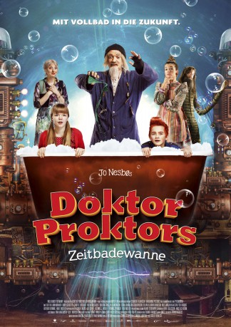
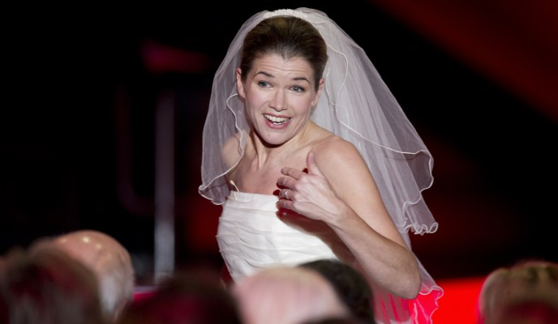

#7411 Doktor Proktors Zeitbadewanne
 
 IMDB-Wertung: 5.9 / 10
IMDB-Wertung: 5.9 / 10  Metascore: 0
Metascore: 0 
Als Lise und Bulle eine außergewöhnliche Postkarte, abgeschickt 1969 in Paris, bekommen, ist schnell klar, dass ihr bester Freund, der verrückte Erfinder Doktor Proktor, dort in Schwierigkeiten steckt. Um ins Paris der Vergangenheit zu gelangen, kommt ihnen die jüngste Erfindung des Doktors gerade recht: die Zeitbadewanne. Einfach die Zeitseife ordentlich im Wasser schäumen lassen, untertauchen, an das gewünschte Ziel denken und – wusch! Doch das ist nicht ganz so einfach, wie gedacht und so befinden sich Lise und Bulle bald auf einer unglaublichen Reise durch Raum und Zeit
Jahr: 2015
Dauer: 95 Minuten
FSK: 6
Land: Norwegen Studio: Wild BunchTonspuren:
Untertitel:
Auflösung: 1080p (1920x800) Größe: 4300 MB
Genre: Familie
Regisseur: Arild Fröhlich
Drehbuch: Hideo Yokoyama
Soundtrack:
Darsteller:
- Atle Antonsen als Claude Cliché
- Arthur Berning als Gefangener an der Wand
- Nils Jørgen Kaalstad als Loverboy
-  Anke Engelke als Rezeptionistin
- Emily Glaister als Lise
- Eilif Hellum Noraker als Bulle
- Gard B. Eidsvold als Doktor Proktor
- Kristin Grue als Juliette Margarin
- Helén Vikstvedt als Raspa
- Stein Johan Grieg Halvorsen als Schnauzbart
- Erlend Klarholm Nilsen als Schnauzbart
- Eili Harboe als Jeanne D'Arc
- Linn Skåber als Bulle's mother
 Ingar Helge Gimle als Commander / Lises father
Ingar Helge Gimle als Commander / Lises father- Christian Skolmen als Dirigent Madsen
- John Eckhoff als Führer
- Bjarne Brøndbo als Blutrünstiger Zuschauer
- Lise Greftegreff als Blutrünstige Zuschauerin
- Rune Hagerup als Skjeggete Tufs
- Károly Rupnik als Pastor
- Gábor Harsai als Baron Margarn / Napoleon
- Balázs Konkoly als Nilpferd 1
- György Flaskay als Nilpferd 2
- László Nádasi als Kellner
- József Incze als Taxifahrer
Datei: X:\2-Dilogie(A-F)\Doktor Proktor\Doktor Proktors Zeitbadewanne (2015, FSK6, 1920x800).mkv seit 08.11.2017
Festplatte: HD Collection-2(A-Z)-3(A-M)
 Alle Filme aus Gruppe '2-Dilogie(A-F)\Doktor Proktor'
Alle Filme aus Gruppe '2-Dilogie(A-F)\Doktor Proktor'